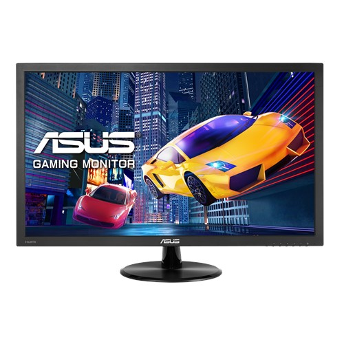

Esta nueva GeForce GTX 1050 es la tarjeta gráfica más básica de Nvidia bajo su nueva generación.
Un poco por encima en precio está la GTX 1050 Ti, que añade básicamente el doble de memoria GDDR5
hasta alcanzar los 4 GB y modifica algo tanto la frecuencia base como la máxima que puede alcanzar.
La tarjeta gráfica GeForce GTX 1650 SUPER es hasta 50% más rápida que la GTX 1650 original y hasta 2X más
rápida que la GTX 1050 de la generación anterior. Gracias a la premiada arquitectura NVIDIA Turing™ y la
memoria GDDR6 ultrarrápida, esta tarjeta es el supercargador para los juegos más populares de la actualidad.
Es hora de equiparte y recibir SUPERPODERES.
Precio: $ 900
Nvidia GTX 1660 SUPER
La tarjeta gráfica GeForce GTX 1660 SUPER es hasta 20% más rápida que la GTX 1660 original y hasta 1.5 veces
más rápida que la GTX 1060 de 6 GB. Gracias a la premiada arquitectura NVIDIA Turing™ y la memoria GDDR6 ultrarrápida,
esta tarjeta es el supercargador para los juegos más populares de la actualidad. Es hora de equiparte y recibir SUPERPODERES.
Precio: $ 1000
Monitor ASUS 22'' 60 Hz, 1080p

El monitor de la compañia ASUS ha sido uno de los productos que mas ha gustado la comunidad gamer, ya que brinda una calidad
de imagen muy superior a otros monitorescumple con los requisito de todas las personas que estan iniciando en el mundo
gamer. tiene caracteristicas como 60 Hz, calidad 1080p